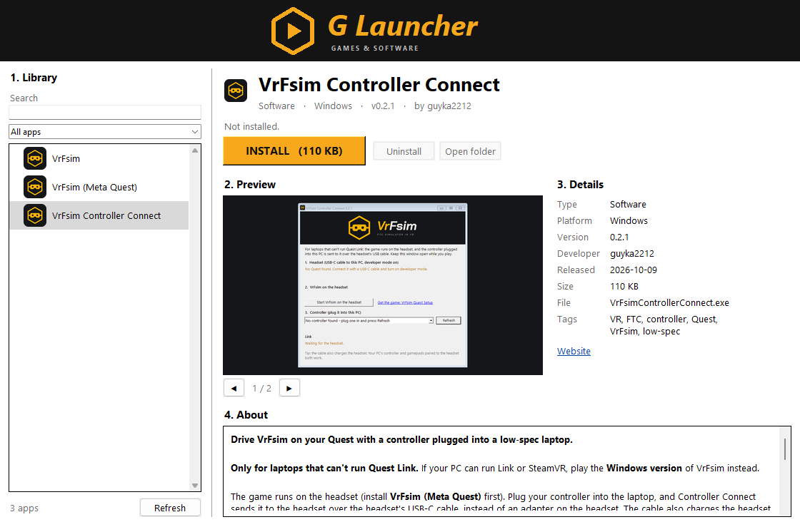

No accounts, ever
Open it and start playing. Nothing to sign up for and nothing to log in to, and the launcher doesn't collect anything about you.
G A M E S & S O F T W A R E
G Launcher is a free launcher for Windows. Pick a game or app, press Install, then Play. Updates show up by themselves. No sign-up, no password, no email.

Open it and start playing. Nothing to sign up for and nothing to log in to, and the launcher doesn't collect anything about you.
Every game and app has a store page with pictures and a description. Press Install, wait for the bar, press Play.
When a new version comes out, an orange Update button appears. One click and you're on the latest build.
VR and Android apps install straight to your headset or phone over the USB cable, with developer mode on.
Games you've installed keep working without internet, even if they're later taken out of the store.
After a game installs, G Launcher asks whether to put a shortcut on your desktop, so you can start it in one click.
This list is live from the same catalog the launcher uses. To play any of these, install G Launcher and press Install.
Press Download for Windows to get GLauncherSetup.exe.
Open the file and press Install. No administrator rights needed. If Windows shows “Windows protected your PC”, press More info → Run anyway. This appears because the setup is new and not code-signed yet.
G Launcher opens with the store. Choose a game, press Install, then Play. You'll find it in the Start menu next time.
Yes. The launcher and everything in its store are free.
No. There are no accounts at all, so you never have to give a name, email or password.
That message shows for programs that aren't code-signed yet. It isn't a virus warning. Press More info, then Run anyway.
By default in %LOCALAPPDATA%\GLauncher\library. You can change the folder in File → Settings inside the launcher.
Turn on developer mode on the headset, plug it into the PC with a USB-C cable and allow USB debugging. Then press Install on device in the launcher. The game appears under Library → Unknown Sources. The launcher needs adb (Android platform-tools, or Meta Quest Developer Hub) on the PC for this.
Windows Settings → Apps → Installed apps → G Launcher → Uninstall. You'll be asked whether to also delete the games you installed.